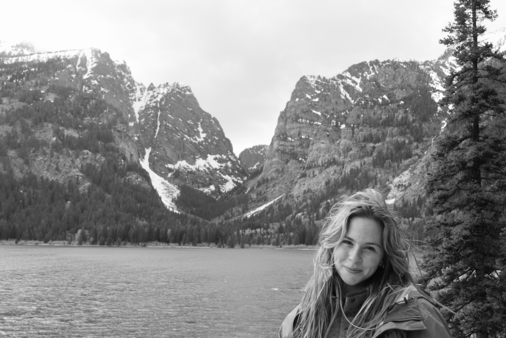

About
As a second-year college student, I’m deeply committed to both my academic journey and my passion for photography. I'm continuously learning, growing, and exploring new ways to blend my education with my artistic perspective.
My portfolio represents my love for natural landscape photography in addition to portraiture and capturing human activity. I work with both digital and film formats and also offer photoshoots for individuals, events, and creative projects.